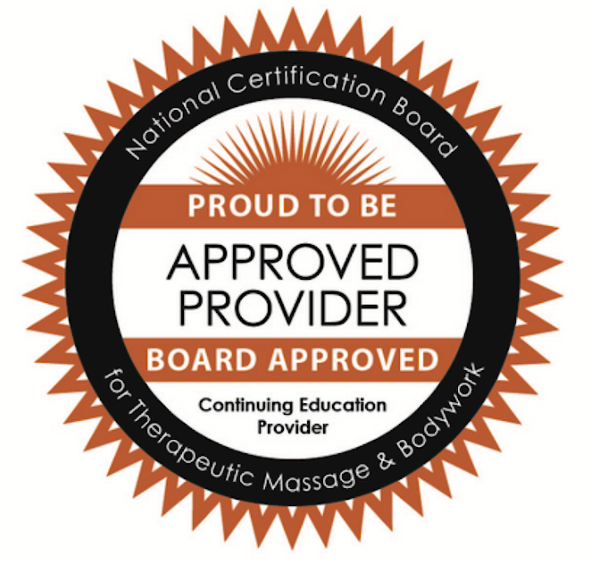

October 2023 Dates Pending (Fri-Sun), 9:30 AM - 5:00 PM each day
November 2023 Dates Pending (Fri-Sun), 9:30 AM - 5:00 PM each day
Great River Craniosacral Therapy Institute, 112 Highmount Ave, Nyack, NY 10960, USA
Description
Our introductory course in Craniosacral Therapy is for you if you are looking for an exciting healing journey
or a career-expanding adventure. This three-day workshop provides you with a practical and fun introduction to CST.
In this training, you quickly begin using your healing hands in an altogether new way—with gentleness, intuition,
and technical accuracy. You also begin connecting with the wavelike craniosacral rhythm and learn over 15 CST techniques
that you can immediately put into practice to release structural and energetic blocks.
Whether CST is performed on its own or as an adjunct to your current practice—from surgery to spiritual healing—you
and your clients will be awed by the results. For massage and physical therapists, rolfers, and chiropractors whose
bodies are wearing out from hard manual labor, the gentleness of CST can transform and prolong your careers. For nurses,
physicians, and psychotherapists seeking effective natural healing forms with virtually no negative side effects,
this calm practice will rejuvenate you and deepen your patients' healing.
The warm, supportive environment of our training program provides you with an ideal place to combine personal healing
with a sacred inner journey. Come join us!
The goals of the introductory workshop are to give students a useful and practical introduction to CST, to
teach students how to begin helping their patients release and resolve pain using CST, and to stimulate further
interest in this hands-on healing modality.
Program Prerequisites
- Read: Your Inner Physician and You by John Upledger
- Initial healing session with Dr. Wish (cost $350)
The purpose of the initial healing session is both for me to get to know each student in a meaningful way and
for each student to get a sense of me. This is not only a technical training, but also an intimate sacred healing
journey, and we each need to decide whether or not to continue this intense journey together. Also, it is my
responsibility to make sure that my students are safe as they touch one another physically, emotionally,
and spiritually. I try to screen out anyone whose participation might be a detriment to themselves or others.
This is a very alive training in which many students open to wondrous inner states they have never before accessed.
Likewise students are exposed to levels of human suffering that they may have never before worked with. Getting to
know each of you through our one on one session allows me to more fluidly guide and instruct the group in this
miraculous healing art, as we develop your unique healing gifts and gently transform your wounds.
CE Credits

This introductory training program has been approved for 21 hours of continuing education for massage therapists by the NCBTMB. Approved provider number: 1000931
Get to know Dr. Wish
Dr. Ron Wish graduated from medical school at Case Western Reserve University in 1983 and completed his family medicine residency
at the University of Maryland Hospital in 1986. His mentors have included brilliant academics in urban medical centers in London, Tel Aviv, and Taipei, gifted
Tai Chi teachers and traditional acupuncturists quietly practicing their arts nearby, beloved family physicians working
with beautiful tribal people and displaced refugees in the mountains of southern India and northern Israel, and
local shamans whose psycho-social and spiritual work seamlessly complemented their physician friends. There was an
emergency room doctor in Portland, Maine who performed laying-on-of-hands healing on the sly; a Filipino cardiologist
who ran his impoverished small town hospital with love; a traditional Tibetan doctor who shared his ancient healing
system with Ron and asked for his help treating the tuberculosis epidemic in his refugee camp; and a Gazan internist
who risked his life to get medical consults and free supplies from our mutual Israeli mentor.
Additional Resources
Suggested Reading
Suggested Movies